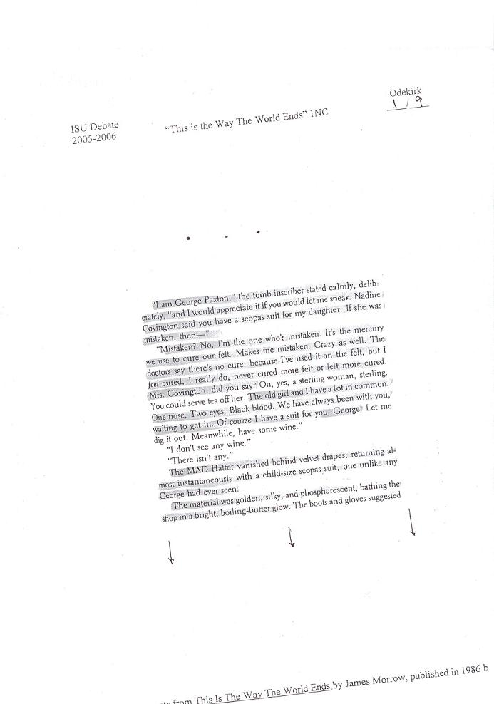
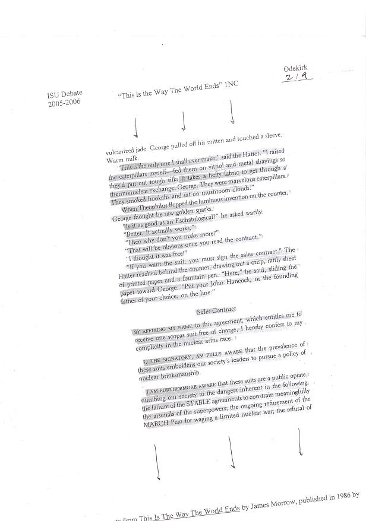
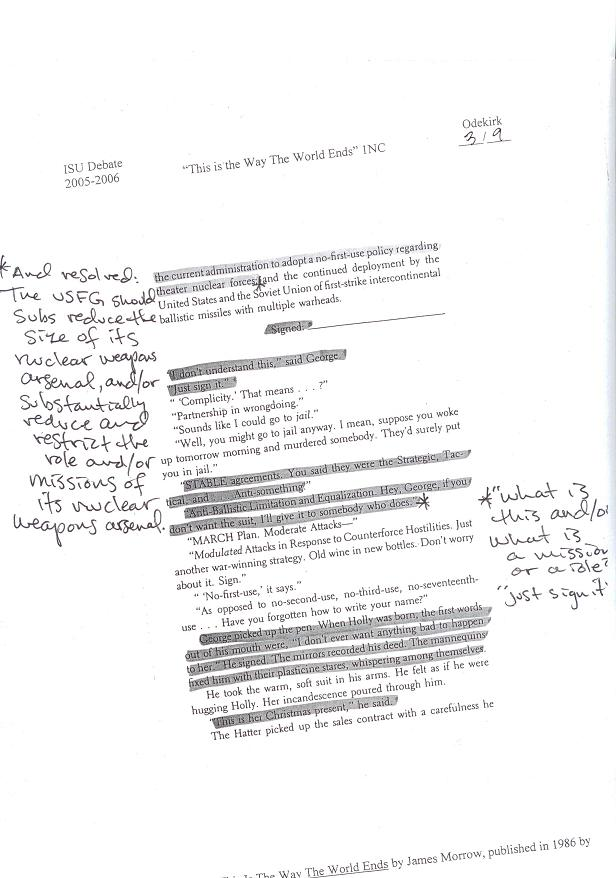
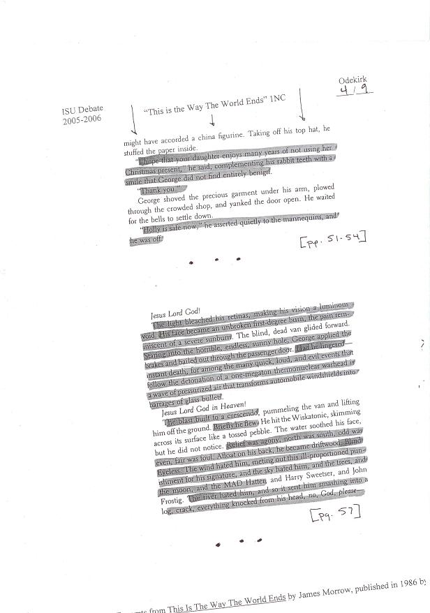
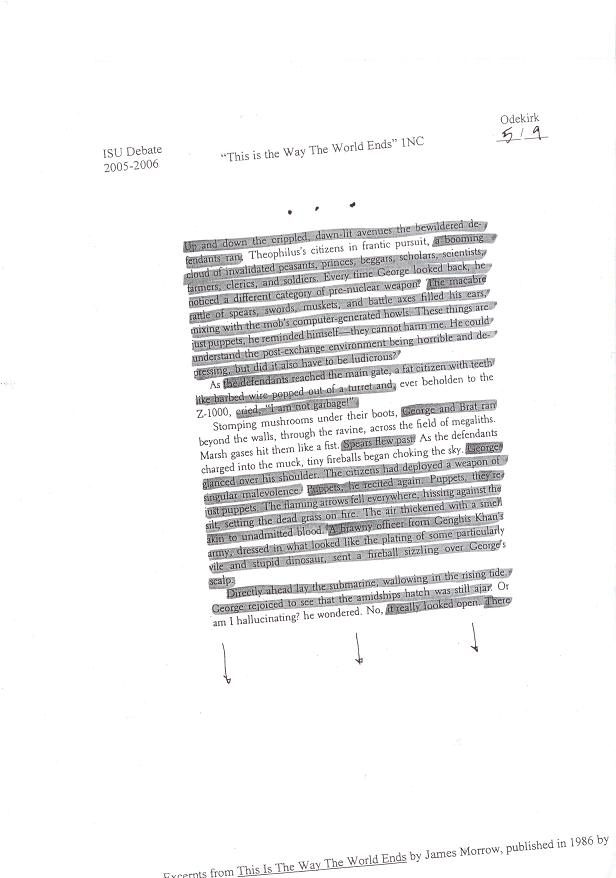
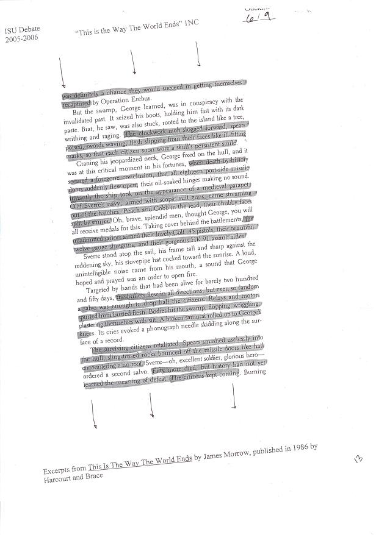
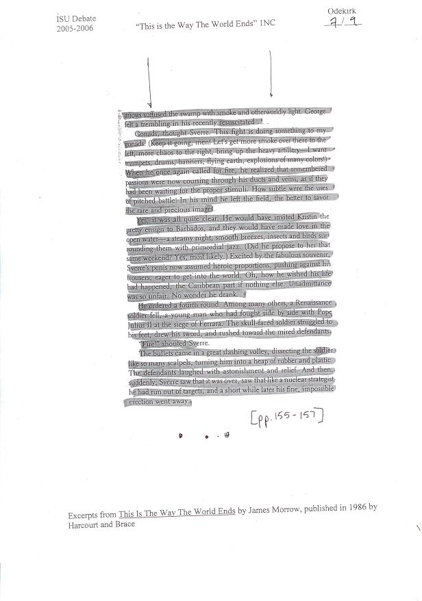
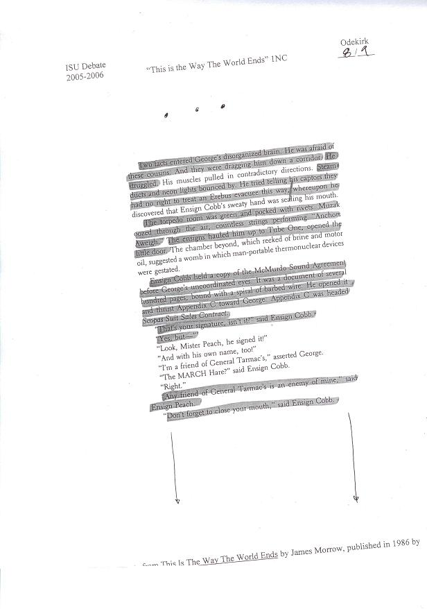
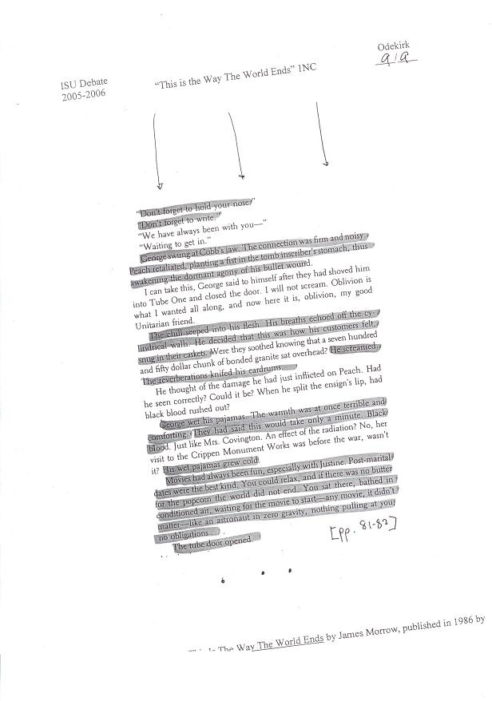

Idaho State BM Aff:
The aff begins with both Brian and Nate playing a game of chess which breaks down because we cannot agree on the objective of the game. After the game breaks down, we begin a new game using heroscape figures.
Following this skit Nate reads these excerpts from James Morrow's This is the Way the World Ends:




(note: we no longer read the resolution in the asterisked location)

Then we read this:
Fuck the contract currently binding the status quo!, we will tear it up by being absolutely resolved: the united states federal government should substantially reduce the size of its nuclear weapons arsenal and/or substantially reduce and restrict the role and/or missions of its nuclear weapons arsenal, that’s right!, we affirm it all the way down, without abandon or regard, without hesitation or a single piece CSIS evidence, blue canary in the outlet by the light switch, who watches over you!, yes, yes, all the way down, but what if… Russia or China, you, you know what I mean… whatever, doing it and doing it and doing it well, from sea to chining sea its gotta be, the USFG, U.S.F.G.U.S.F.G.U.S.F.G., and/or, and/or, and/or, and/or, mission/role, even though it has become this Jessica, we will still love this child as if it was our own… AAAAAAAAAAAAAAAAAAAAAAAAAAAAAAAAHHHHHHHHH!!!!!
vote aff.





we finish by reading this:
And Contention 6
Sub point C
The Framework Under view
1st is our standards
A. Prefer predictability-
1. Predictability is key to fairness and without fairness there can never be any predictability
2. Predictable ground is the only way to fairness because there is no argument ever for making us think outside the box.
3. and, predictability is good, all we should ever have to do is run our super specific disad that generally links to every topic
B. Topic education-
1. Only talking about policies is great, that way we will always act completely rational. C’mon congress the cold war was just the heat of the moment
C. And, footnote Joyner in 99, role playing is awesome so
DM: You enter the dark cave. You reach a fork, will you go left or right?
P: Left
DM: The cave widens ahead. You see a giant spider ahead.
P: Cast immobilizing aura
DM: The spider is not affected.
P: Cast Fireball
DM: The spider receives critical damage but rolls a saving throw and flees into the dark.
P: YES My lvl 25 Black Mage will kick all your asses
D. realism is inevitable and absolute truth
Mearshiemer in 2002
blah blah blah blah blah blah blah blah blah blah blah blah states blah blah will blah always act blah blah blah in their own blah best interest blah blah blah blah blah blah blah blah blah blah blah blah blah blah blah blah blah blah blah blah blah blah blah blah blah blah blah blah blah blah blah blah
E. And they have the Burden of rejoinder because we read this portion of the 1AC it places a burden upon them to reply by certified mail within 7-10 days, their response should include no less than four pages, typed and double spaced in 11 point times new roman.
F. Footnote Ignatif here because Ivory towers are bad for 2reasons
1. They usually don’t have doors and usually require fairy tale women to escape
2. Buildings made of soap dissolve in the rain
3. The impact is Elephant commoditization which is a systemic impact and must be prioritized
And finally I’ll footnote Shively here because if we don’t have agreement this debate will self destruct in
3
2
1
……..
End of 1AC
The 1ac functions as a criticism of pure rationalities. When we act based on systems of pure rationalities we disregard that irrationalities are inherently part of the world. also pure rationalities become hegemonic and are the root of unimaginable violence.
If you have any further questions feel free to email Brian Brantley at debaterbrian@gmail.com